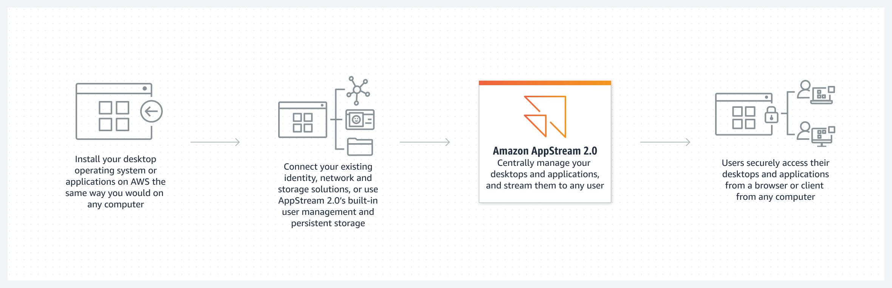

Beschreibung
Amazon AppStream 2.0 repräsentiert einen erstklassigen, vollständig verwalteten Desktop-Streaming-Dienst, der Organisationen jeder Größe die nahtlose Bereitstellung von Desktop-Anwendungen über einen simplen Webbrowser auf ihren Endgeräten und Laptops ermöglicht. Diese wegweisende Plattform revolutioniert die Art und Weise, wie Unternehmen ihre Desktop-Anwendungen verwalten und bereitstellen, indem sie eine herausragende zentrale Verwaltung und sichere Verteilung ohne den Bedarf an umfangreicher Hardware- oder Infrastrukturinvestitionen gewährleistet.
AppStream 2.0 zeichnet sich durch seine unvergleichliche Skalierbarkeit aus, die es Unternehmen ermöglicht, eine unbegrenzte Anzahl von Nutzern weltweit zu unterstützen. Basierend auf der bewährten AWS-Infrastruktur bietet der Dienst eine robuste Rechenzentrums- und Netzwerkarchitektur, die höchsten Sicherheitsstandards gerecht wird und ein Höchstmaß an Datenschutz und Compliance gewährleistet.
Endnutzer profitieren von einem nahtlosen und hochresponsiven Anwendererlebnis, da ihre Anwendungen in hochoptimierten virtuellen Maschinen ausgeführt werden, die speziell auf ihre individuellen Anforderungen zugeschnitten sind. Darüber hinaus werden die Wiedergabesitzungen dynamisch an die jeweiligen Netzwerkbedingungen angepasst, um eine gleichbleibend hohe Leistung zu gewährleisten.
Dank AppStream 2.0 haben Nutzer von einer breiten Palette an Geräten, darunter Chromebooks, Macs und PCs, Zugriff auf AWS-Desktop-Anwendungen. Die nahtlose Integration mit Active Directory, Netzwerken, Cloud-Speicherlösungen und Dateifreigaben ermöglicht eine mühelose Einbindung in bestehende IT-Infrastrukturen.
Zusätzlich bietet AppStream 2.0 ein umfangreiches Set an APIs, die eine einfache Integration in vorhandene IT-Lösungen und Anwendungen gewährleisten, was die Implementierung und Nutzung noch weiter vereinfacht und beschleunigt.
Amazon AppStream 2.0:
- Desktop-Streaming-Dienst für Unternehmen.
- Bietet Desktop-Anwendungen über Webbrowser ohne Hardwareinvestitionen.
- Skaliert weltweit für unbegrenzte Nutzer.
- Basierend auf sicherer AWS-Infrastruktur.
- Nutzer erleben nahtloses Anwendererlebnis in virtuellen Maschinen.
- Zugriff von verschiedenen Geräten aus möglich.
- Einfache Integration in bestehende IT-Lösungen durch APIs.
Schlüsselwörter
Schlüsselworte bzw. Schlagworte sollen uns dabei helfen, einen Service leichter zu erkennen, wenn es um Prüfungsfragen geht. Ließ dir die Fragen richtig durch und achte auf folgende Schlüsselworte. Sie können dir bei der Beantwortung der Fragen helfen.
- Anwendungsbereitstellung
- Virtuelle Desktop-Infrastruktur (VDI)
- Cloud-basierte Anwendungsbereitstellung
- Skalierbare Anwendungsbereitstellung
- Streaming-Anwendungen
- Benutzerdefinierte Anwendungsumgebungen
- Integration mit AWS-Diensten
- Unterstützung für verschiedene Endgeräte
- Zentralisierte Anwendungsverwaltung
- Flexible Anwendungsbereitstellung
Grafische Erklärung
Prüfung Fragen
- Welche Art von Dienst ist Amazon AppStream 2.0?
- Was ist eine der Hauptfunktionen von Amazon AppStream 2.0?
- Welche Art von Anwendungen können über Amazon AppStream 2.0 gestreamt werden?